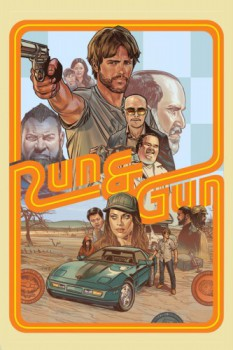

País:Estados Unidos, 96 minutos.
Idiomas:Inglés, Español
GénerosAcción, Suspenso
Director/es:Christopher Borrelli
Guionistas:Christopher Borrelli
Códec de vídeo:Unknown
Número: 44


Certificación:R
Argumento:
Ray, un ex criminal que evade una serie de asesinos despiadados liderados por el excéntrico jefe de la mafia, Grayson, encuentra refugio con un misterioso buen samaritano, pero pronto se hace evidente, sin embargo, que ha entrado en el nido de alguien incluso más peligroso que los asesinos que lo persiguen.
Reparto
Medio: Archivo de video,
Localización: D:\Multimedia\Películas\Corre y dispara (2022)\Corre y dispara (2022).mkv
Prestado: No
Rel. aspecto: Unknown